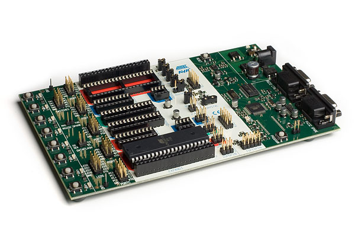

Arduino IDE: разбираемся с меню Tools и некоторыми другими функциями.
Итальянцы молодцы. Запустили в мир DIY настоящего монстра. С появлением экосистемы Arduino весь рынок цифрового DIY получил мощнейший толчок. Тысячи, сотни тысяч, миллионы пользователей принялись покупать оригинальные и совместимые платы для их последующего программирования и использования в своих поделках. Причина такой популярности в первую очередь связывают с низким порогом для входа в эту среду. Вам не нужно тратить много денег на приобретение плат: открытый стандарт дал дорогу на рынок множеству последователей и копировщиков. Вам так же не стоит сильно заморачиваться над программированием: поставляемая «в комплекте» Arduino IDE упрощена настолько, насколько это возможно. Пользователь просто пишет код и не задумывается о настройках компилятора, о том, что программировать при помощи Arduino IDE можно разными программаторами, а иногда и вообще голые микросхемы.
И вот, наступает момент, когда стандартная Arduino IDE становится тесновата, а ее неудобство начинает просто выбешивать, особенно, если пользователь знаком с более продвинутыми средами разработки по другим платформам и языкам программирования. Кто-то начинает мигрировать на что-то более интересное, например, на Atom или VS.Code в смеси с PlatformIO, а кто-то старается выжать из Arduino IDE все, что только можно.
Сегодня я выступлю как раз в роли подобного «особо интересующегося персонажа» и попробую вместе с читателем разобраться чуть-чуть побольше в тонкостях Arduino IDE. Все ниженаписанное более-менее соответствует версии 1.8.9 Arduino IDE.
Темная тема для Arduino IDE
Очень многих раздражает простенькое оформление Arduino IDE в корпоративных цветах Arduino. Все такое белое и «слепое». Долго работать в таком цветовом решении не всегда комфортно, особенно если это ночь, вокруг темно и все спят.
Вариант темной темы под Mac. Скриншот с GitHub.
Для такого случая сторонний разработчик разработал так называемую темную тему, тему которая позволяет вернуть знакомый с детства вариант черного фона и светлого текста на нем. Тема не идеальна, так как не позволяет полностью настроить все нюансы, но ограничение это связано не с самой темой, а с ограничениями Arduino IDE. Тему, при желании, можно подредактировать самостоятельно.
Меню Sketch
Я, как и большинство других пользователей Arduino IDE, загружаю свои скетчи в платы при помощи панели инструментов. Щелкнул на кнопку загрузки и скетч начал заливать в плату. Удобно. Но, как оказывается, меню Sketch (здесь и далее я буду использовать английский вариант интерфейса Arduino) содержит не мало интересных и полезных новшеств. Итак, кратенько пробежимся по ним.
Пункты меню Very/Compile и Upload стандартны и знакомы всем. Именно они используются для проверки правильности кода и последующей нормальной загрузки. А вот пункт Upload using programmer для меня до недавнего времени оставался Terra incognita. Как оказалась, данный пункт необходимо применять при загрузки скетча без использования загрузчика (bootloader), но с использованием полноценного программатора. О загрузчиках и программаторах поговорим немного позже, пока же просто запомним этот пункт.
В этом же меню присутствует весьма полезный пункт Export compiled Binary. Применяется он в том же направлении, что и Upload using programmer. По умолчанию Arduino IDE компилирует исходный код в файл, который сохраняется во временную директорию и после завершения загрузки она должна очищаться. Временная директория находится в каких-то дебрях файловой системы, а искать там скомпилированный файл с непонятным наименованием — то еще удовольствие. Так вот функция Export compiled Binary как раз и применяется для того, чтобы сохранить уже откомпилированный скетч в виде бинарных-файлов в папке самого скетча. В дальнейшем скомпилированные скетчи могут быть прошиты при помощи внешнего программатора или же USB-TTL преобразователя.
Кстати, просмотреть папку скетча можно все через тоже самое меню Sketch при помощи пункта Show Sketch Folder. Кстати, при вызове Export compiled Binary компилируется сразу два файла: с и без загрузчика. Для чего это нужно, опять же немного ниже. При компилировании при помощи Export compiled Binary следует учитывать, что примеры из поставки Arduino так откомпилировать не выйдет. Папки, в которых хранятся эти скетчи имеют режим только для чтения, а IDE необходимо куда-то записать скомпилированные файлы (обычно в таком случае возникает ошибка «Export canceled, changes must first be saved.»). Поэтому тренируемся на своих собственных скетчах или же пересохраняем скетч в новую папку.
Меню Tools
Меню Tools в Arduino IDE дает куда больше интересного и полезного, нежели Sketch. Более того, сам вид меню зависит от того, какую платформу вы выбрали в качестве целевой.
Меню Tools Arduino IDE с выбранным микроконтроллером семейства AVR.
Начнем с общего и тех пунктов, которые есть в оригинальных платах, построенных на микроконтроллерах Atmel (ее все же купила Microchip).
Пункт Auto Format позволяет отформатировать ваш исходный текст по общепринятому в Arduino IDE стандарту. Отформатированный текст позволяет легче находить ошибки, да и сама программа выглядит опрятно. Так же, зачастую, при форматировании при помощи автоформата получается найти такие ошибки, как отсутствующие скобки, что при большом количестве вложений несколько затруднительно. Оная же функция вызывается и в самом редакторе в контекстном меню доступном по правой кнопке мышки.
Archive Sketch позволяет упростить навигацию по папке в которой хранятся все ваши скетчи. Напомню, что каждый скетч хранится в отдельной папке, куда складывается все, что к нему относится. Если скетчей у вас много, особенно если плодить версии в новых папках, то разобраться во всем этом нагромождении становится очень сложно. Для этого и можно применить функцию архивирования. Папка со скетчем будет сжата в архив ZIP, а затем стерта из каталога. Останется только архив.
Serial Plotter противовес Serial Monitor предназначен для вывода графика из данных выдаваемых в последовательный порт. Все, что от вас требуется для построения графика — выплевывать в порт цифры при помощи Serial.println(). Неплохой пример использования плоттера приведен на страницах проекта wikihandbk.
Приведенные выше пункты стандартны. Их использование, вкупе с Library Manager должны быть известны даже неопытным пользователям. А дальше попробуем погрузиться в чащобы Arduino IDE и мир программирования микроконтроллеров.
WiFi101 / WiFiNINA Firmware Updater
Сетевое взаимодействие для оригинальных плат Arduino всегда было ахиллесовой пятой. Их просто нет в стандартной поставке, а все решения в виде внешних плат настолько ди́ки, что просто пропадает всякое желание их использовать. По этой причине многие используют платы на основе ESP8266, которые дешевле, мощнее и сразу с WiFi на борту. Но итальянцы, да и ардуинщики вообще, ребята упорные, поэтому вместо того, чтобы переходить на нормальные платы, продолжают изобретать очередные ужасы, к которым и относятся WiFi101 и WiFiNINA.
WiFi 101 Shield. Взято откуда-то с просторов сети.
Собственно этот пункт меню предназначен для обновления прошивки и сертификатов соответствующих плат.
Arduino Uno с платой WiFi под библиотеку WiFiNINO
Дичь полнейшая и подобные платы лучше не использовать, так как они до жути непопулярны, стоят дорого, потребляют уйму энергии. В общем, гораздо проще и элегантнее все решается на базе плат семейства ESP. В целом на Arduino присутствует подробный туториал, где разжевано как и что обновляется при помощи данной функции.
ESP Exception Decoder
Плагин для Arduino IDE под непонятным названием ESP Exception Decoder предназначен для более легкой отладки программ под платформу ESP8266. Exception или «исключение» обозначает возникновение ошибочной ситуации которая не была корректно обработана кодом. Например, деление на 0 однозначно вызовет исключение, и работа программы будет прервана. В языке, на котором программируют в Arduino IDE нет возможности использовать блоки try {} catch {}, соответственно работа с исключениями невозможна (точнее по синтаксису он есть, но компилятор его отвергнет, по крайней мере для плат на основе AVR). Программист обязан предусматривать и проверять данные и предупреждать возникновение подобных ситуаций. Иначе результат может быть непредсказуемым.
На первоначальной экосистеме Arduino, построенной на Atmel AVR (об этом опять же дальше) нет места исключениям. И даже несмотря на то, что язык, применяемый для программирования в Arduino IDE есть ни что иное как диалект C++, в нем так же нет исключений и они не поддерживаются компилятором, ибо в AVR нет исключений, слишком там мало места для еще и исключений. Сильно жизнь это не осложняет, просто программы пишутся куда более аккуратно. А вот в экосистеме ESP, в том числе и под Arduino, исключения присутствуют.
И в этом возникает проблема. При возникновении исключительной ситуации, того же деления на 0, микроконтроллер, например, esp8266 выдаст в последовательный порт информацию о возникновении исключения, стек вызовов функций, где оно возникло, сохранит некоторые сведения во внутренней памяти (к ним можно будет обратиться после перезагрузки).
Вот такую вот информацию сохраняет esp8266 после перезагрузки. В этом случае произошла перезагрузка по питанию.
Система в чипах ESP более замороченная, чем в AVR и при возникновении нештатной ситуации выплевывает в последовательный порт некий стек адресов, по которым можно добраться до истинной причины возникновения ошибки. Но выдаются адреса в совсем нечитаемом человеком виде. Чтобы сопоставить строчку в исходном коде с конкретным адресом, выданным в стеке, и был придумал ESP Exception Decoder.
Намеренный вызов исключения на WeMos Mini
После возникновения ошибки необходимо перенести стек в декодировщик и он выдаст «путь» по которому можно дойти до строки в годе где и возникла исключительная ситуация. В некоторых случаях функция исключительно удобная. Ознакомиться с подробной инструкцией по применению декодировщика можно на страничке проекта ESP Arduino Core.
Get Board Info
Пожалуй, самая бесполезная функция, которое позволяет, в некоторых случаях, понять, какая плата подключена к компьютеру для прошивки. В большинстве случаев вы это и так знаете. А если не знаете, то функция отобразит, опять же, в большинстве случаев информацию только об оригинальных платах.
Burn Bootloader
Наконец-то мы начинаем подбираться к действительно интересным пунктам меню. Начнем с пункта загрузки загрузчика (Burn Bootloader). Но для начала попытаемся понять, что такое bootloader и для чего он нужен. В старые далекие ламповые времена тоже существовали программируемые микросхемы. Но программировались они весьма жестким способом. Использовался специальный программатор, в который вставлялась микросхема, происходило таинство, и микросхему можно было использовать в оборудовании.
Сей способ с одной стороны достаточно прост, но с другой он очень неудобен. Ведь чтобы сменить прошивку на уже прошитой микросхеме, если это вообще возможно, ее необходимо вытащить из устройства, установить в программатор и повторить процедуру. Что далеко не всегда возможно, так как микросхема может быть впаянной в плату и без специализированного оборудования достать ее оттуда нельзя или же само устройство летает на спутнике. Именно для этих целей была придумана методика ISP (In-System Programming), что в переводе означает ни что иное как «внутрисхемное программирование». ISP не стоит путать с SPI (Serial Peripheral Interface). ISP это именно внутрисхемная прошивка, а SPI это стандарт взаимодействия между устройствами. И пусть даже вас не вводят в заблуждения сильно похожие разъемы и наименования контактов. ISP и SPI это разные вещи.
В общем случае ISP позволяет программировать микроконтроллер через любой его интерфейс и даже программироваться самостоятельно с изменением своего кода посредством своего собственного же кода. Но для осуществления подобных фокусов требуется некая программа, которая будет сидеть в микроконтроллере и управлять этим программированием. Именно она и называется загрузчиком (bootloader). И именно благодаря ей есть возможность прошивать микроконтроллеры просто подключив их к USB-порту, или же применив простейший программатор на параллельном порту компьютера (у кого они еще остались), а в некоторых случаях обновление прошивки можно загружать вообще по воздуху применяя прием OTA (Over The Air).
Вообще микроконтроллер можно прошить и без загрузчика. Именно для этих целей и предназначен соответствующий пункт в меню Sketch. В этом случае места под ваш скетч в памяти микроконтроллера будет больше. Однако, в последствии уже нельзя будет загрузить обновление прошивки обыкновенным путем. Придется при помощи программатора либо прошить загрузчик, либо далее прошивать прошивку без загрузчиков.
Для Arduino существует несколько вариантов загрузчиков. Стандартный, который прошивается еще при изготовлении платы Arduino, многие не любят. Дескать он притормаживает при загрузке устройства в ожидании передачи данных для прошивки и только спустя десять секунд запускает ваш прошитый скетч. Дело в том, что некоторые платы Arduino, в которых не реализован механизм DTR (Data Terminal Ready) / RTS (Ready To Send) действительно нужно прошивать очень быстро иначе bootloader просто передаст управление той микропрограмме, что уже находится в микропроцессоре. Вот и начали все, кому не лень, модифицировать штатный загрузчик или же писать свой собственный.
Стандартные загрузчики для плат Arduino
Где брать загрузчики? Вообще стандартный загрузчик можно загрузить прямо из Arduino. Для этих целей и предназначен пункт меню Burn Bootloader. А сами загрузчики из стандартной поставки можно найти в папке с установленным Arduino в поддиректории hardware. Если же вы используете платы отличные от Arduino AVR, например, ESP3288, то все дополнительные загрузчики и прочие инструменты можно найти в личном профиле пользователя (AppData\Local).
Загрузчик для плат семейства ESP
Но если вы скачиваете дополнительные загрузчики и хотите установить их в Arduino IDE, то можно использовать папку hardware в вашем каталоге для скетчей. После перезагрузки IDE загрузчики из этой папки так же будут доступны, однако не следует забывать про файл boards.txt который должен присутствовать в подпапках папки hardware. Если у вас вдруг нет текстового редактора или же вы испытываете трудности с редактированием boards.txt то есть решение. Один энтузиаст создал специальную программу Arduino BOARDS.TXT Editor, которая позволяет с легкостью вносить изменения в указанный файл.
Так, где же брать эти самые альтернативные загрузчики? Искать в сети. Поисковики выдают просто немыслимое количество разнообразных вариантов. Для начала можно остановиться на OptiBoot, попробовать калькулятор «формирующий» загрузчик под конкретную плату или начать просматривать ссылки с официальной страницы загрузчиков Arduino.
И подводя промежуточный итог, если нам нужно загрузить прошивку без загрузчика (так для нее останется больше места) в микроконтроллер, то подключаем его к программатору и загружаем прошивку через Sketch – Upload Using Programmer. Если же хотим вернуться к обычной и удобной загрузке скетчей через среду Arduino по USB и без прочих танцев африканских народов, то прошиваем загрузчик обратно (или же мы купили микроконтроллер без загрузчика) уже посредством Tools – Burn Bootloader. В обоих случаях незабываем про корректный выбор платы, программатора и прочих настроек.
И еще раз, если в плате установлен загрузчик, то после перезагрузки платы он первым получит управление, послушает немного выделенные порты в надежде если вдруг там кто-то хочет залить прошивку. Если признаков заливания прошивки нет, то он со спокойной душой передает управление основной программе. А если в плате нет загрузчика, то тогда управление после перезагрузки сразу передается основной программе. Все просто, по крайней мере на пальцах.
AVR и прочие
Для лучшего понимания дальнейшей информации я хочу привести некоторые сведения о самих микроконтроллерах с которых пошло-поехало Arduino. Мы уже знаем, что оригинальные Arduino построены на микроконтроллерах (больших интегральных схемах, которые можно программировать и которые могут работать и сами по себе без внешней обвязки, подавай только напряжение) от компании Atmel (нынче Microchip).
У компании Atmel наработано несколько линеек микроконтроллеров, но нас в первую очередь интересует линейка AVR (кстати, аббревиатура AVR официально никак не расшифровывается), так как именно на ней и построены оригинальные Arduino. Линейка появилась аж в 1996 году и, пожалуй, была одна из первых на рынке предложившей решение, где микроконтроллер и память (ОЗУ и ПЗУ) расположены в рамках одного единственного кристалла. Повторюсь, чтобы система работала достаточно только одной микросхемы AVR на которую подается питание. Все остальное у нее уже есть внутри.
AVR линейка делится на несколько основных групп:
Именно микросхемы AVR обеспечивают поддержку таких функций как АЦП, ШИМ, SPI, I2C и прочих. Arduino же просто их использует (хотя с появлением более мощных микроконтроллеров, тех же esp8266, появилась возможность эмуляции вышеназванных функций программным способом).
И вопреки возможности прошивки AVR методом ISP посредством стандарта SPI через установленный загрузчик, для программирования микроконтроллеров применяется великое множество программаторов. Как простых и собираемых на коленке, так и сложных с внешним питанием и обилием всевозможных функций. Но прежде, чем мы перейдем к рассмотрению программаторов следует пояснить еще один момент. При программировании микроконтроллера с использованием внешнего программатора (без использования загрузчика) необходимо четко понимать, что такое fuses или не трогать настройки, связанные с ними, если такого понимания нет. Fuse/фьюзы/предохранительные биты — это настройки внутри микроконтроллера, в частности AVR. Они прошиваются точно так же, при помощи внешнего программатора (без применения ISP). И обычно применяются для настройки самого микроконтроллера, например, можно включить или отключить возможность самопрошивки контроллера, включение или отключение внешнего сброса устройства (и соответственно возможности его прошивки через bootloader), включение и отключение очистки памяти при перепрограммировании чипа и тому подобное. Подробнее ознакомиться с фьюзами можно (и нужно) в документации к конкретному контроллеру. К чипу ATmega328, одному из самых популярных чипов на Arduino, документация доступна на официальном сайте производителя.
Programmer:
Пожалуй, что пункт меню Tools под кодовым названием Programmer является самым таинственным местом всего Arduino IDE. Информации по данному пункту очень мало, и она настолько скудна что может привести к разочарованию даже самого стойкого прагматика. Очевидно, что данный пункт содержит выбор программаторов для программирования плат. И кажется, что одну и ту же плату можно запрограммировать кучей разных способов и программаторов. Но, а что же нам на этот счет говорит документация к Arduino IDE? А она нам вещает о том, что данный пункт меню Tools имеет смысл только при прошивке загрузчика. Во всех остальных случаях используемый «прошивальщик» зашит в тот самый boards.txt, что обсуждался немного ранее. Причем для микроконтроллеров AVR это всегда avrdude, а для ESP это всегда esptool. Кроме того, для плат AVR может применяться, в штатной поставке, целых два различных протокола «закачки» прошивки в микроконтроллер: avr109 и arduino. Разные протоколы, как не сложно догадаться, применяются для разных загрузчиков, установленных в конкретные микроконтроллеры.
В штатной поставке Arduino IDE с подключенной инфраструктурой ESP для прошивки загрузчика можно применить несколько типов программаторов. Кратко пройдемся по ним всем. По факту все AVR в Arduino IDE прошиваются посредством приблуды AVRDUDE (бывший AVRProg) и различия между «программаторами» только в используемом протоколе и настройках AVRDUDE. На текущий момент AVRDUDE поддерживает 39 программаторов, но в Arduino IDE используется только 14. Ознакомиться с настройками каждого из них можно в файле programmers.txt в той самой директории hardware, где складируется файлик boards.txt. Информация по настройкам для каждого из программатора доступна в файле avrdude.conf (располагается обычно в Arduino\hardware\tools\avr\etc) и в куцей документации к самому AVRDUDE.
AVR ISP
AVRISP есть ни что иное как фирменный программатор от Atmel. Он позволят программировать AVR. И похоже, что на этом все. Мне ну далось найти хоть сколько-нибудь достоверной информации про данный программатор, кажется, что он сошел со сцены и осел где-то в дебрях плат у аксакалов еще до появления Интернет.

Отладочная плата Atmel STK500. Фото производителя.
Единственное, что хоть как-то проливает свет на данный программатор, так это то, что он по факту является частью STK500 (такая отладочная плата для AVR от Atmel) версии 1, которая подкачается к компьютеру посредством последовательно порта.
AVRISP mkII
А вот AVRISP mkii является актуальным программатором, подключаемым к USB. По крайней мере о нем есть информация на сайте производителя и большинство безродных программаторов, которые продаются бесчисленными компаниями как раз и являются клонами именно этого программатора.
Фирменный программатор AVRISP mkII. Фото производителя.
Тем не менее, он так же является частью отладочной платы STK500, но уже версии 2, которая подключается к компьютеру уже по интерфейсу USB. Хотя, по отзывам очевидцев и версия 1 может использовать с USB посредством конвертера COM-USB.
USBtinyISP
Это один из программаторов, который можно собрать своими руками, он прост и дешев, а в качестве «сердца» у него используется чип tinyAVR. Вот только возникает вопрос – как же его прошивать, если он сам и предназначен для прошивки AVR?
Тем не менее, программатор поддерживается Arduino IDE и весьма популярен. Программатор был разработан в Нидерландах, но в настоящее время поддерживается AdaFruit.
ArduinoISP и ArduinoISP.org
Что подразумевали под этими двумя программаторами разработчики Arduino IDE остается только гадать, да угадывать. Сайт ArudinoISP.org дает перенаправление на туториал на сайте Arduino.cc по использованию Arduino as ISP. Единственное отличие этих двух от Arduino as ISP только лишь используемый протокол. Вероятно, что они были когда-то собраны в качестве поддержки особого загрузчика, а с течением времени исчезли с лица истории. По крайней мере в документации AVRDUDE никакого упоминания ни про arduinoisp ни про arduinoisporg просто нет.
USBasp
Еще один простой программатор, который можно собрать дома на коленке. И он тоже построен на чипе от Atmel. Проект был развернут немецкий программистом, а затем подхвачен всем миром. Как и с USBtinyISP чип от Atmel для программатора необходимо запрограммировать.
Parallel Programmer
Данный тип программатора считается одним из самый простых, если не самым простым. По сути «параллельный программатор» — распиновка параллельного порта компьютера и соответствующее программное обеспечение.
Для сборки данного программатора требуется компьютер с параллельным интерфейсом (раньше по нему было модно подключать принтеры) и всего три резистора двух номиналов. Подробная схема (от руки) и описание по сборке (с фотографиями) доступна на официальном сайте Arduino.
Arduino as ISP
Поскольку платы Arduino сами по себе являются микроконтроллерами, да еще и с навороченными входами/выходами, то их вполне можно использовать в качестве программаторов.
Для этого в плату Arduino закачивается скетч из примеров под именем ArduinoISP, соединяются проводки (между платой, в которую залит скетч и платой, которую нужно прошить), и прошивается загрузчик (не забываем выбрать программатор Arduino as ISP). Подробная инструкция доступна опять же на странице официального сайта Arduino.
Arduino Gemma
Если подходить формально, то Gemma это не программатор. Это микроскопическая плата от AdaFruit предназначенная для вшивания/встраивания в одежду/обувь. Она лишь частично совместима с Arduino, так как содержит очень мало вводов/выводов. Чтобы подключить ее к USB разработчику пришлось выдумать отдельный загрузчик, и отдельный PID для USB устройства. По этой причине прошивается Gemma как отдельный программатор (в реальности там встроенный USBtiny), имеет отдельный конфиг для AVRDUDE с жестко прописанным bootloader. Другими словами, прошить этой платой ничего нельзя, но зато ее можно прошить саму загрузчиком.
BusPirate as ISP
BusPirate это не только программатор, скорее это не совсем и вовсе не программатор, а одноплатный компьютер специализированный для изучения и программирования новых и неизвестных микропроцессоров. Его конструкция такова, что на одной плате собраны все мыслимые и не очень интерфейсы для исследования того, что же попало к вам в руки. Штука интересная и если вы уж работаете с таким, то должны знать, что с AVRDUDE у компьютера могут быть определенные проблемы, связанные с прошивкой самого BusPirate. Обходятся они, естественно, настройками AVRDUDE и некоторым шаманством с железом.
Atmel STK500 development board
Та самая отладочная плата, что упоминается в AVR ISP и AVR ISP mkII. В Arduino IDE не делается различия между версиями и предполагается, что AVRDUDE самостоятельно определит версию протокола обмена и осуществит самонастройку. Если же этого не происходит, то в programmers.txt нужно четко прописать stk500v1 или stk500v2 в качестве применяемого протокола.
Atmel JTAGICE3 (ISP mode) и Atmel JTAGICE3 (JTAG mode)
JTAGICE3 — современное решение для отладки чипов семейств AVR, SAM и Cortex. Разумеется, только тех чипов, что поддерживают внутричиповую отладку. Попутно эта коробочка еще и программирует их всех.
Atmel JTAGICE3 отладчик/программатор.
Продукт актуальный, у производителя имеется документация. Разница между программаторами только в применяемых протоколах. В ISP режиме применяется протокол JTAG3ISP, а в JTAG просто JTAG3.
Atmel-ICE (AVR)
Так же активный продукт Atmel и его можно купить. Как и JTAGICE3 он позволяет не только производить отладку у чипов, поддерживающих такую функцию, так и программировать их. Для прошивки используется протокол atmelice_isp. В общем использовать программаторы на подобие JTAGICE3 или Atmel-ICE только для прошивки 8-битных микроконтроллеров это как стрелять из пушки по клопам. Слишком уж мощные и дорогие решения для задачи, которая решается куда проще.
Обширное семейство ESP
Выше мы рассмотрели специфику прошивки контроллеров семейства AVR. Но при этом обойти не менее многочисленное и популярное семейство контроллеров ESP было бы просто некрасиво. Тем более, что при выборе одного из семейства, меню Tools значительно увеличивается в объеме. Пройдемся по меню и попробуем понять, что каждый из пунктов увеличенного меню означает. Здесь и далее я рассматриваю SDK ESP версии 2.5.0.
Меню Tools в Arduino IDE при выборе одной из плат семейства ESP.
Часть меню все же остается тем же самым, что и прежде, поэтому излишне повторяться не будем.
Upload speed
Позволяет выбрать скорость, с которой будет происходить загрузка прошивки и других частей в микроконтроллер. Платы семейства ESP могут комплектоваться мегабайтами памяти (в то время как AVR речь идет в лучшем случае о сотнях килобайт) и загрузка на скорости 9600 может занять непростительно долгий отрезок времени.
Поддерживаемые скорости прописываются для каждой из плат индивидуально.
CPU Frequency
Многие платы семейства ESP могут из коробки работать сразу на нескольких частотах. В Arduino регулировать частоту процессора можно при прошивке микроконтроллера. Опять же, доступные варианты указываются для каждой из плат отдельно.
Flash Size
Здесь указывается каким образом разделять всю доступную ПЗУ для хранения кода программы и для файлов. Микроконтроллеры ESP поддерживают память SPIFFS (Serial Peripheral Interface Flash File System). По сути, SPIFFS это файловая система для последовательного доступа. И у программиста есть возможность определить, сколько памяти отводить для файловой системы (туда можно записать, например, HTML-файлы или картинки) и сколько для своего скетча. Но тут есть некоторая тонкость. На текущий момент, насколько мне известно, как минимум платы EPS8266 не могут закачать скетч размерностью более 1 мегабайта. Есть обходные пути, но ведь еще нужно умудриться написать скетч, который в компилированном виде будет занимать более 1 мегабайта. Поэтому рекомендуется использовать как можно больший SPIFF, дабы уменьшить время загрузки скетча.
В тоже самое время есть сведения от потерпевших, что платы ESP32 могут испытывать проблемы связанные с «не хватает места для скетча». Но проблемы эти всего лишь из-за еще сырой поддержки плат EPS32 в инфраструктуре ESP для Arduino.
Debug port
Пункт может принимать значения Disabled, Serial и Serial1. Данная настройка предназначена для вывода отладочной информации в последовательный порт (хотя включить ее можно и программно, например, через Serial.setDebugOutput(true)). Если в скетче инициализируется соответствующий порт (Serial или Serial1), то в него могут выводиться отладочные сообщения, которые не мешают выводу в этот же порт другой информации.
При инициализации и включении вывода отладочной информации рекомендуется устанавливать максимальную скорость работы порта. В противном случае, при большом объеме вывода могут наблюдаться фризы исполнения программы или же сброс буфера вывода. Подробнее о выдаче отладочных сообщений можно прочитать в статье на сайте проекта ESP8266 Core.
У ESP обычно присутствует два последовательных порта. Первый, Serial использует UART0 и GPIO1 (TX) с GPIO3(RX). Второй, Serial1 использует UART1 и только GPIO2 (TX). Соответственно Serial1 не может быть использован на прием. Тем не менее, в обоих случаях есть возможность программного переназначения пинов, как и скорости, четности и прочих характеристик.
Debug Level
Настройка позволяет выделить те отладочные сообщения, которые важны пользователю. Выбор комбинаций оставляют огромное пространство для маневра, но при этом обязательно должна быть включена предыдущая функция.
lwIP Variant
Настройка предназначена для выбора варианта реализации сетевого стека IP. Прошу обратить внимание, тут именно lwIP (lightweight IP), первая буква L, а не i.
По умолчанию используется самый верхний вариант, уменьшающий использование памяти. Но если ваш микроконтроллер активно работает с сетью, то можно пожертвовать памятью и получить наивысшую скорость. Аналогично можно включить поддержку IPv6 или вернуться на стек версии 1.4, где такой поддержки не было вообще. Под features тут понимается всякого рода ICMP, IGMP и прочие навороты, без которых можно обойтись. Основная документация по версии ветки 2.х доступна на сайте разработчика. Постоянно растущий Wiki по теме lwIP доступен на страницах проекта FanDom.
VTables
Под VTables в IDE подразумевается механизм виртуальной таблицы для позднего связывания объектов. Не буду вдаваться в подробности, о них можно задумчиво почитать в Википедии. Остановлюсь лишь на самих доступных опциях, а их всего три:
Понятно, что самый быстрый способ хранения и обработки виртуальных таблиц это IRAM, а самый медленный Flash. Но тут следует так же смотреть на то, как активно работает программа с объектами, есть ли множественное наследование и как часто объекты создаются и уничтожаются. В обычных применениях такая таблица и вовсе может быть статической и отлично проживать на Flash, с другой стороны, она может быть весьма крупной и просто не влезать в IRAM (область ОЗУ для хранения кода программы).
Exceptions
Пункт меню позволяет включить или отключить использование исключительных ситуаций. О них мы уже рассуждали выше, в том числе и в разделе об ESP Exception Decoder. При включении исключений программист в коде уже может использовать структуры try {} catch {}, что увеличивает потребление памяти, но позволяет легче программировать сложные алгоритмы. Напомню, что try-catch будет работать только для плат семейства ESP. Отрадно замечать, что программисты работающие над библиотеками для семейства ESP для Arduino уже начали использовать механизм try {} catch {} в своем коде на GitHub.
Erase Flash
Пункт предлагает стирать внутреннюю память микроконтроллера в следующих пропорциях:
Прочее по ESP
В заключение статьи хотелось бы добавить, что при прошивке загрузчика в ESP всегда используется прошивальщик esptool. И всегда применяется один и тот же загрузчик eboot. Чтобы пользователь там не выставил в Programmer.
Итог
Статья получилась весьма увесистая, но я полагаю, что она даст ответы на некоторые животрепещущие вопросы. Подавляющее большинство информации приходилось искать по крупицам в Сети. Похоже, что с течением времени возрастает сложность даже такого простого инструмента как Arduino IDE и в скором времени может случиться так, что начинающий быстрее плюнет, чем начнет разбираться с мегатоннами документации, техник, приемов и способов, тем более что большинство из них поддерживается энтузиастами, что ведет к повышенному почкованию указанных техник, методик, документаций.
Однако, хочу надеться, что авторы Arduino IDE все же смогут удержать свое творение в приличных рамках и оставить его все таким же легким в освоении инструментом. Заодно хочу им напомнить, что документировать свое творение стоит постоянно иначе получается «не только лишь все, сегодня могут в завтра».
Update: разбираясь глубже с тем как настраивать свои собственные платы или же добавлять новые платы к Arduino IDE, наткнулся на исчерпывающую документацию по этому поводу.